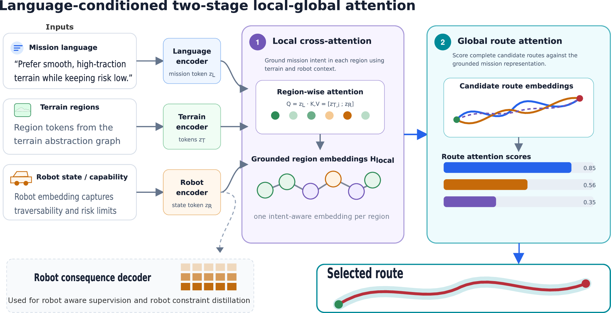
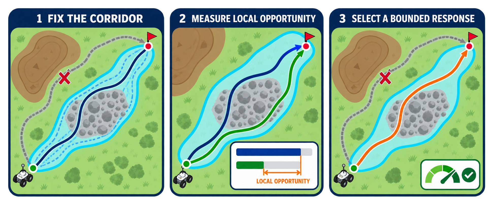
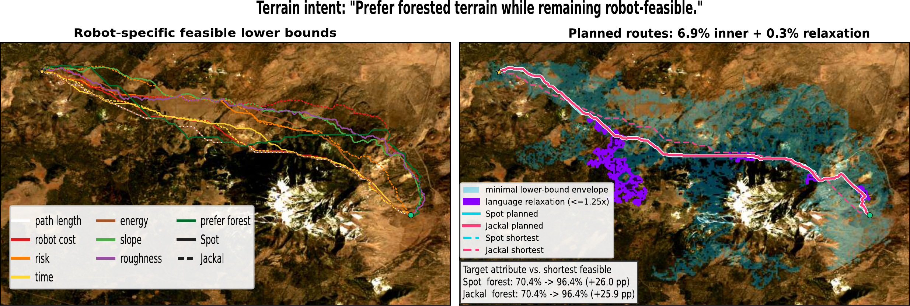
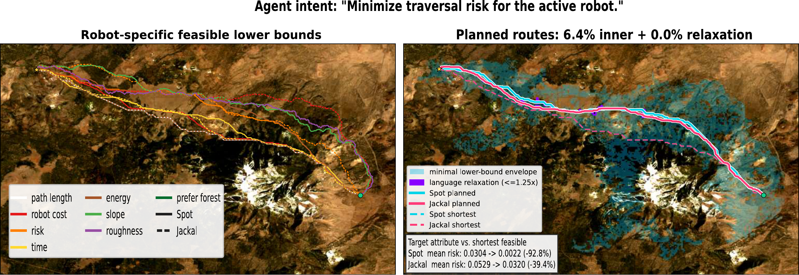

Requested values
Relate the preference to terrain properties on a connected semantic-geometric graph.
Bridging Perspectives in Navigation · IROS 2026
Bounding Language Preferences by
Local Opportunity and Embodiment
University at Buffalo
The same request can produce different safe routes.
Local opportunity bounds the response. Robot consequences determine which response is feasible.

The idea
Outdoor operators describe preferences such as avoid severe slopes or preserve energy. Yet an instruction alone does not determine a useful route: a suitable alternative may not exist near the start–goal query, and different robots experience the same terrain differently.
We present ongoing work on corridor-feasible language alignment. A semantic region graph exposes bounded alternatives, separating transferable mission values from environment- and embodiment-dependent route consequences. Preferences without meaningful local opportunity are reported as unsupported rather than inducing arbitrary detours.
Robot-specific Jackal and Spot cost models are trained using simulated traversal data. Initial held-out results support corridor-bounded adaptation from typed physical intents. Free-form language grounding and physical robot validation remain future work.
01 / Corridor contract
A method-independent corridor is fixed using robot, distance, and objective-specific lower-bound routes. Candidate routes must satisfy the active robot’s mobility constraints and traversal-cost budget.

Relate the preference to terrain properties on a connected semantic-geometric graph.
Measure how much improvement is available relative to the neutral route.
Evaluate complete routes using the active robot’s energy, risk and mobility model.
Make a lack of meaningful local alternatives explicit.
The prototype uses the CLEAR semantic-geometric abstraction to bind preferences and robot consequences to connected, elevation-aware terrain regions.
02 / Grounded routes
“Prefer forested terrain while remaining robot-feasible.”

“Minimize traversal risk for the active robot.”

03 / Initial evidence
Held-out simulation evaluates typed slope, roughness and traction intents with separate wheeled and legged robot cost models.
95% CI: 93.4–95.8%
2,519 actionable atomic cases
95% CI: 0.133–0.160
2,505 referenced cases
Every selected route satisfies the simulated robot-cost budget.
The preference gain must reach both an absolute floor of 0.005 and 10% of the available local opportunity.
Corridor-Bounded Intent Regret (CBIR) compares the chosen route with an approximate objective-specific reference from the same feasible alternatives.
0 = reference · 1 = neutral · lower is better. CBIR applies when the reference improves on neutral routing.
04 / Validation agenda
Independent maps and sensor conditions, including cases with no meaningful alternative.
Paired Jackal–Spot trials on the same maps and instructions, measuring physical outcomes.
Blinded human route comparisons, including disagreement and inter-rater reliability.
Comparisons with adaptive search and existing language-conditioned cost-map methods.
{kind=link}
{kind=link}